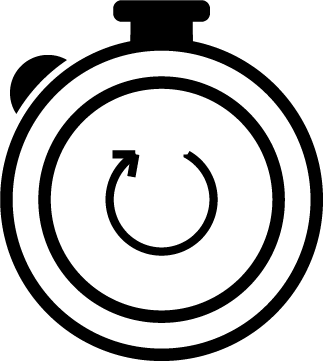

Q1. How old are you?
Below 20
Over 20
Q2. How do you feel?
Excited
Calm
Loved
Anxious
Tired
Frustrated
Irritated
Q3. What transportation are you going to use?
Subway
Bus
Car
Train
Airplane
Q4. How much time can you spare?
Less than 3 hours
More than 3 hours, less than 6 hours
More than 6 hours, less than a day
 More than a day
Submit